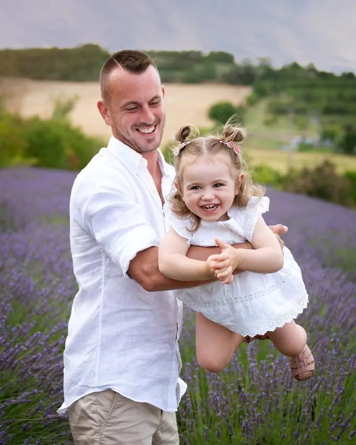
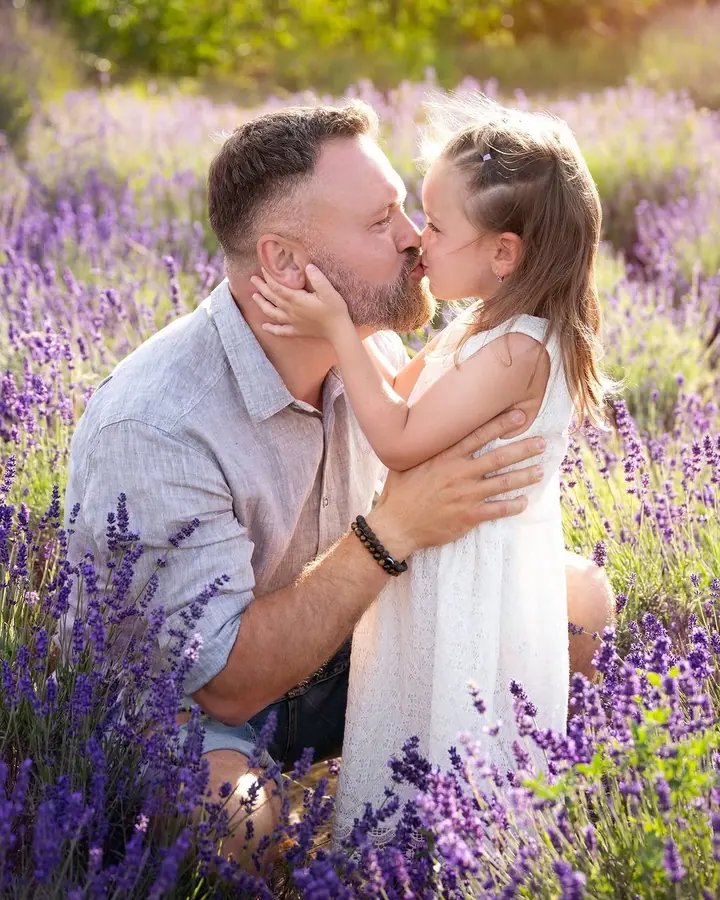
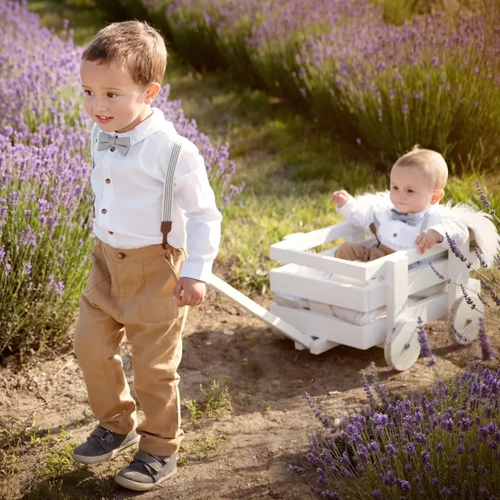

Rodinné focení
Focení rodin a dětí v ateliéru, venku v přírodě nebo každé léto v levandulích. Ráda vyfotím i generační fotky, třeba se čtyřmi generacemi pohromadě.

Jmenuji se Michaela Kamprlová, ale klidně mi říkejte Míša. Jsem rodinná fotografka z Prahy a fotím těhotenská bříška, novorozená miminka i celé rodiny s dětmi. Fotíme v …
Rezervovat termínJsem Míša, rodinná fotografka z Prahy. Specializuji se na těhotenské a novorozenecké focení a na focení rodin a dětí. Za posledních 8 let jsem měla možnost vyfotit stovky rodin a mnohé se ke mně každý rok vracejí.


Možná přemýšlíte, jestli budete vědět, jak se postavit, co si obléct nebo jak focení zvládne miminko. To je naprosto v pořádku. Každé focení s vámi předem naplánuji a během něj vás citlivě provedu, v klidném tempu a s respektem k vám i vašim dětem.
Fotím v ateliéru v centru Prahy, v přírodě i u vás doma. Každé léto mířím s rodinami do levandulí a na podzim chystám v ateliéru vánoční scény. Chci, abyste si odnesli fotky, na kterých se budete cítit dobře, a hezkou vzpomínku na samotné focení.
Co fotím
Focení rodin a dětí v ateliéru, venku v přírodě nebo každé léto v levandulích. Ráda vyfotím i generační fotky, třeba se čtyřmi generacemi pohromadě.
Od října do prosince v ateliéru připravuji vánoční scény, kde děti zdobí perníčky, píšou přání nebo zdobí stromeček. Focení trvá zhruba 20 minut a rekvizity i oblečení pro malé děti vám zapůjčím.
Fotíme v ateliéru, venku v přírodě nebo u vás doma. Klidně si přineste věci, které pro vás mají osobní význam, třeba dětské botičky nebo ultrazvukový snímek.
Aranžované focení v ateliéru v centru Prahy s jemným světlem a promyšlenou kompozicí, nebo přirozené lifestyle focení u vás doma. Bezpečnost miminka je pro mě vždy na prvním místě.
Postup
Společně najdeme termín a vybereme styl focení, který vám sedí.
Poradím vám s oblečením, místem i průběhem, abyste přesně věděli, co vás čeká.
Fotíme v klidu a bez stresu. Celou dobu vás vedu, takže nemusíte řešit, jak pózovat.
Pošlu vám malé neupravené náhledy a vy si vyberete, které chcete upravit. Do 4 týdnů od platby dostanete odkaz ke stažení hotových fotografií.
Otázky
Ideálně mezi 28. a 34. týdnem těhotenství. Bříško už je krásně vidět a vy se pořád cítíte pohodlně. Termín doporučuji rezervovat už během druhého trimestru.
V mém ateliéru v centru Prahy, venku v přírodě nebo u vás doma. Novorozenecké focení dělám v ateliéru nebo u vás doma v Praze a okolí.
Vůbec ne. Celým focením vás provedu a přizpůsobím se vašemu tempu i tempu vašich dětí, takže se nemusíte ničeho bát.
Nejdřív vám pošlu náhledy, ze kterých si vyberete fotky k úpravě. Upravené fotografie vám pošlu do 4 týdnů od platby. Neupravené fotografie neposkytuji.
Vánoční focení stojí 2500 Kč. V ceně je 5 upravených fotografií, konzultace před focením, zhruba 20 minut focení a zapůjčení rekvizit i oblečení pro malé děti. Každá další fotka stojí 350 Kč.